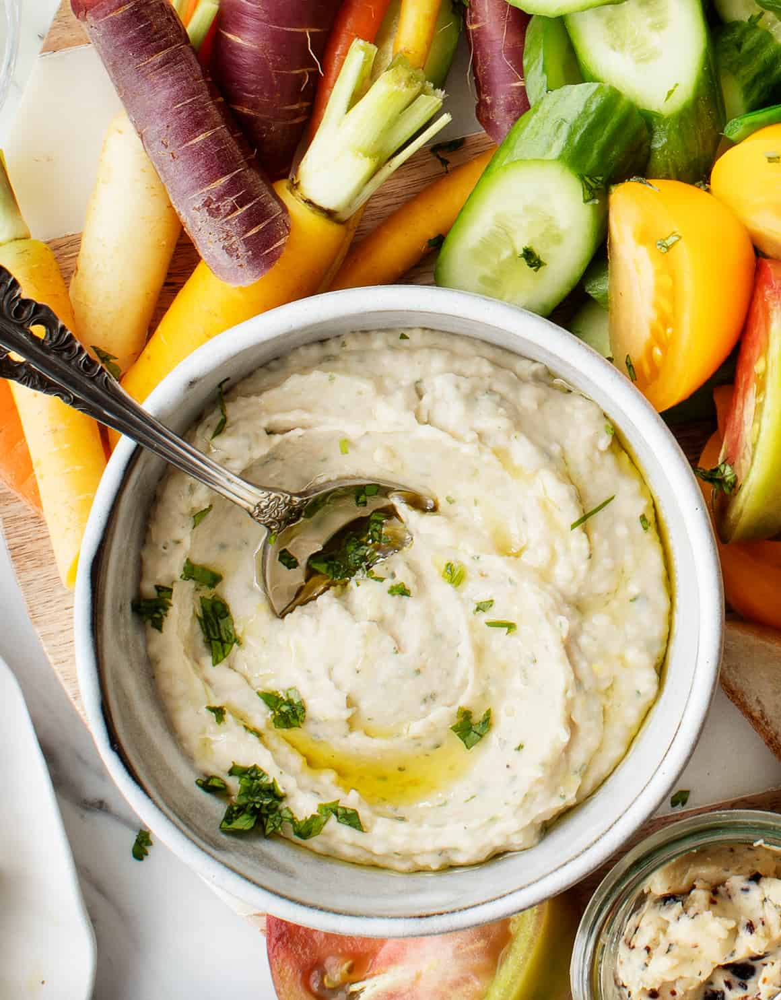

Bean Dip

This easy white bean dip recipe is healthy and delicious
Ingredients
1 can white beans
olive oil
nutritional yeast
garlic
paprika
Steps
Drain beans
Combine ingredients in a food processor
Blend until smooth
Enjoy